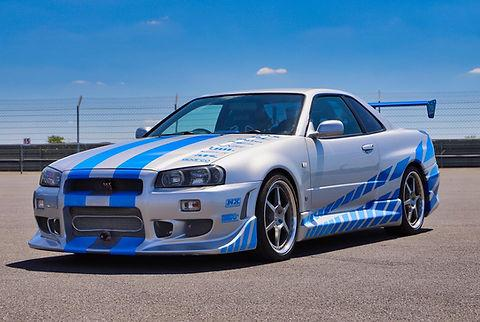
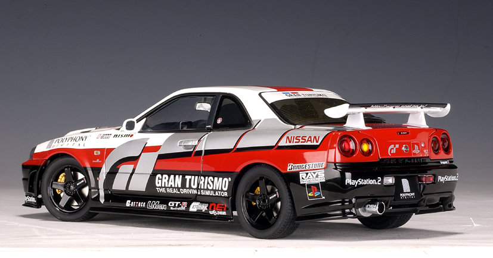
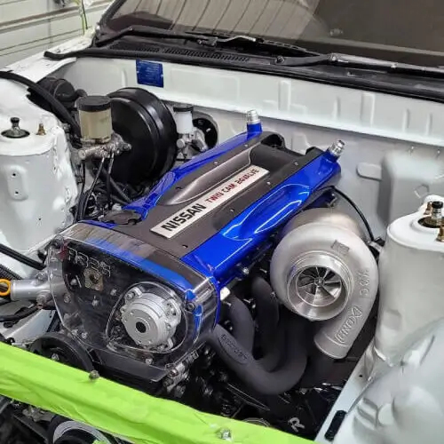

An Icon of Pop Culture
The R34 GT-R's fame extends far beyond the asphalt. It became a global superstar through its unforgettable roles in movies, video games, and its central place in tuning culture, cementing its status as a legend for generations of fans.

The Fast & The Furious
The R34 was immortalized on the silver screen as the signature car of Brian O'Conner (Paul Walker) in *2 Fast 2 Furious*.

Gran Turismo & Gaming
For many, the first experience with the R34 was virtual. The car was a cover star and a dominant force in the *Gran Turismo* series.

The Heart of Tuning
The RB26DETT engine is a masterpiece of engineering, capable of handling immense power upgrades, making it a favorite canvas for tuners.